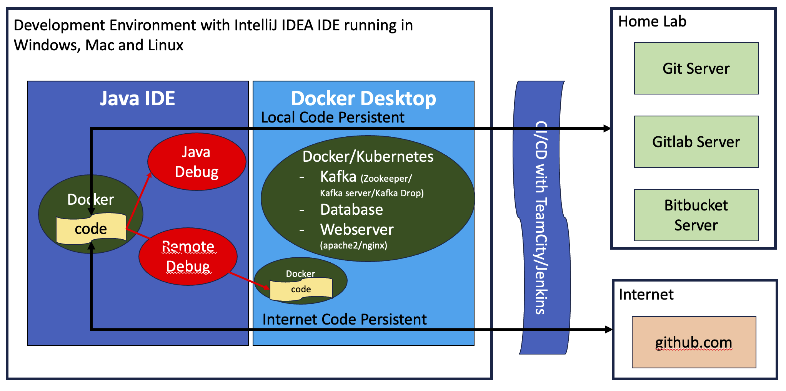

Java Skill (draft)
May 22, 2023

Development Environment #
The Java Development Environment is setup as follows:
We use IntelliJ IDEA as the primary Integrated Development Environment tool.
- IntelliJ IDEA with Git Servers: to connect to Git Server,GitLab Server, Bitbucket and Github
- IntelliJ IDEA with Git: to manage Code Control - Local and Remote Git activities.
- IntelliJ IDEA Debug: to debug and learn everything about Golang
- IntelliJ IDEA Remote Debug: to remote debug to diagnose code issues and defects in the integration
- IntelliJ IDEA and Docker Desktop as an Integrated Development Environment: to create the development environment using Docker and Kubernetes e.g. Kafka, Database, JBoss, Web servers (Apache, nginx, jetty)
- We use TeamCity or Jenkins to perform CI/CD
- We use HttpClient plugin comes with IntelliJ IDEA for Restful Integrated Testing

- Docker Desktop: We use Docker Desktop to deploy various environments used for the development and the integration testing:
- Kafka dockers referring to the diagram for the Docker Desktop containing various Kafka sources provided by
- Confluent docker,
- Redpanda C++ Kafka and Redpanda Data Github
- Debezium Docker
- etc…
- Kubernetes
- Kafka dockers referring to the diagram for the Docker Desktop containing various Kafka sources provided by
The reasons for composing the docker services and/or kubernetes pods are:
- We allow each Developer to replicate the Development Environment with docker, thus suitable for microservice team and work breakdown
- We deploy the application in the Development Environment to the application in the Testing Environment with docker
- We deploy the application with CI/CD in mind and automate testing
- When we learn a new computer language, the debug will assist the learning. We setup two approaches to debug Golang:
- We use the IntelliJ IDEA IDE debug the code
- When the Developers work with the Testers to trace any issues
- We use the IntelliJ IDEA or Visual Code IDE to perform the remote debug to a Golang process